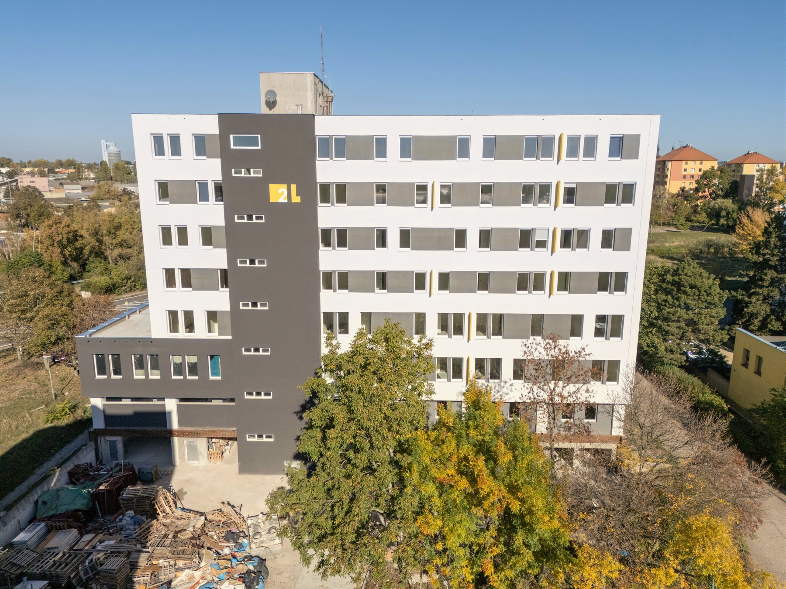
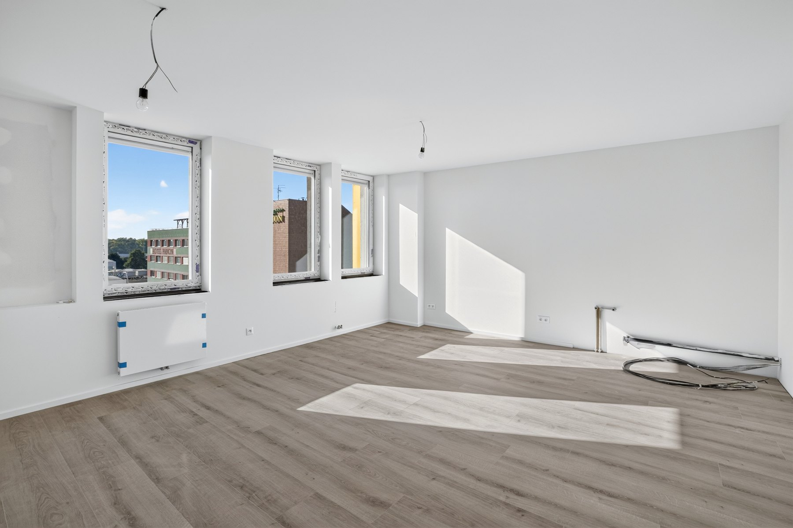
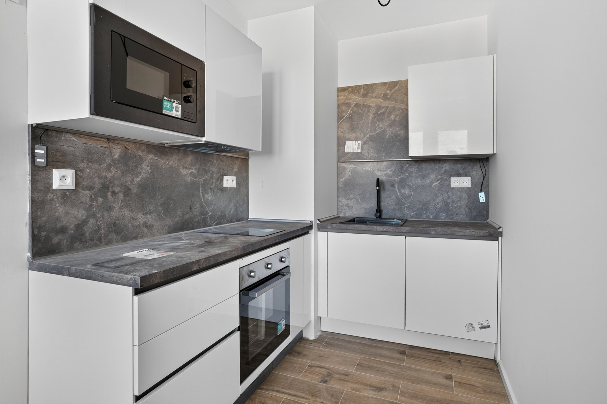
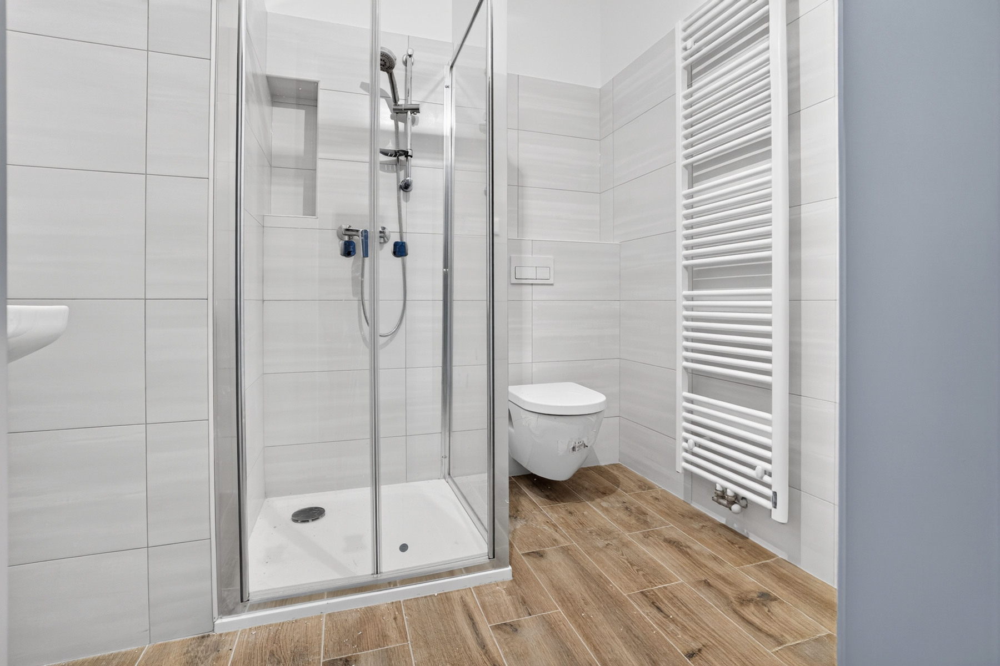
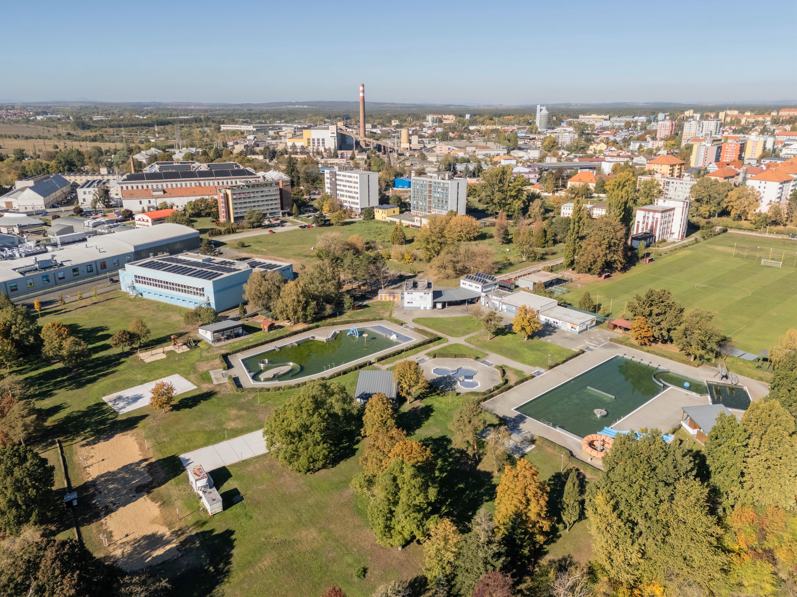

33,2 m² · 1NP
2.757.000 KčDetail a půdorys ↗KOUPELNÍ 2 / HODONÍN
Skutečný dům.
Skutečné prostory.
Ubytovací a komerční jednotky v polyfunkčním domě, který můžete vidět takový, jaký skutečně je.
01 / REALITAAktuální fotografie domu
02 / ETAPYPrvní etapa zkolaudována
03 / VÝHLEDII. etapa: předpoklad od ledna 2027
O PROJEKTU
Jeden dům. Více možností.
Rekonstrukce administrativního objektu v Hodoníně přináší 46 ubytovacích jednotek a komerční prostory. Sedm nadzemních podlaží, dvě výtahové kabiny a služby v okolí tvoří městský dům pro každodenní život.
Poznat projekt
SKUTEČNÉ PROSTORY
Uvnitř je to skutečné.
Žádný katalogový ideál. Místnosti, které už mají světlo, povrchy a vlastní měřítko.
Na fotografiích je aktuální stav vybraných interiérů. Některé detaily se stále dokončují.
Prohlédnout interiéry


VÝBĚR JEDNOTEK
Prostory na dosah
Dispozice a ceny v přehledu vycházejí ze snímku oficiální nabídky k 25. 10. 2026. Aktuální dostupnost vždy potvrďte u prodejce.
44,6 m² · 2NP
3.655.000 KčDetail a půdorys ↗40,1 m² · 2NP
3.287.000 KčDetail a půdorys ↗LOKALITA
Místo, které znáte. Nový pohled.

Koupelní ulice leží v Hodoníně poblíž sportovišť, krytého bazénu i letního koupaliště. Na jednom místě se tu potkává městský život, služby a prostor pro pohyb.
Prozkoumat lokalituKONTAKT
Přijďte se podívat.
Fotografie jsou dobrý začátek. Pro konkrétní jednotku, aktuální cenu a termín prohlídky se obraťte na prodejce.